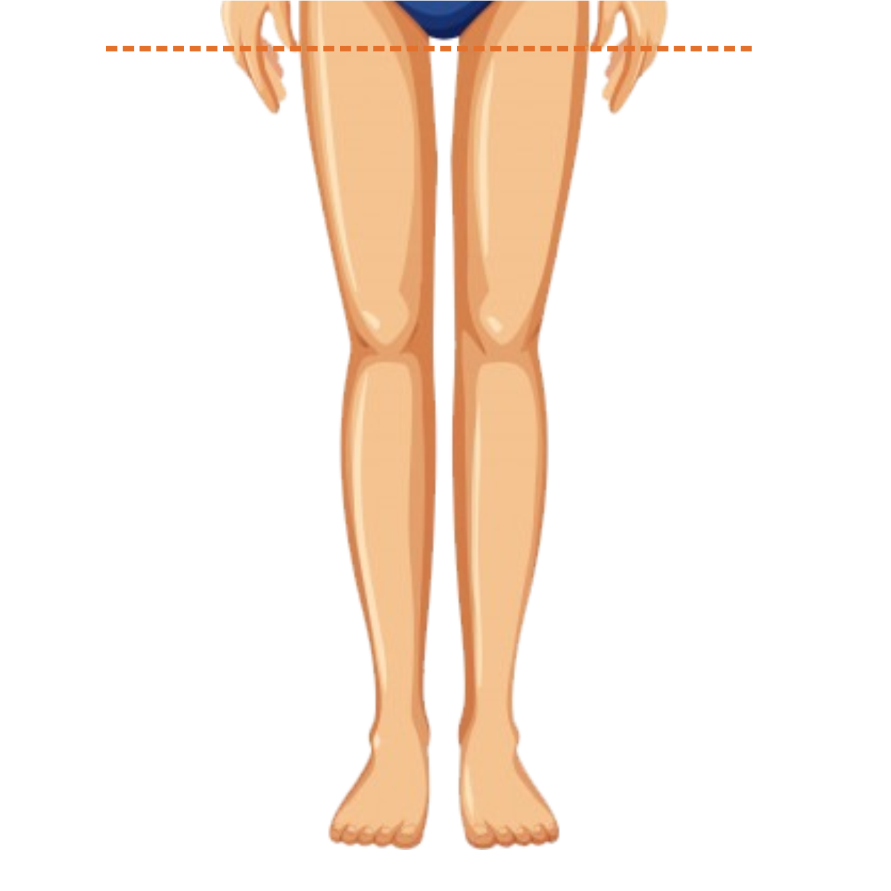

<ion-header>

  <ion-navbar color="cinza1">
    <ion-title>Quadril</ion-title>
  </ion-navbar>

</ion-header>


<ion-content padding>
  
  

  <ion-list>
    <h2>Medida do quadril</h2>
    <ion-item><ion-input type="text" text-center [(ngModel)]="quadril.quadril"></ion-input></ion-item>
  </ion-list>

  <button ion-button block color="amarelo1" (click)="continuar()">Continuar</button>
</ion-content>
